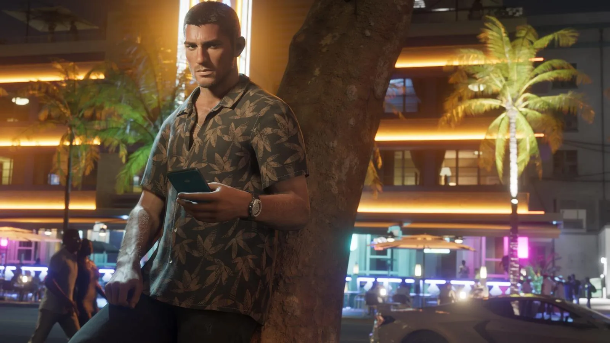
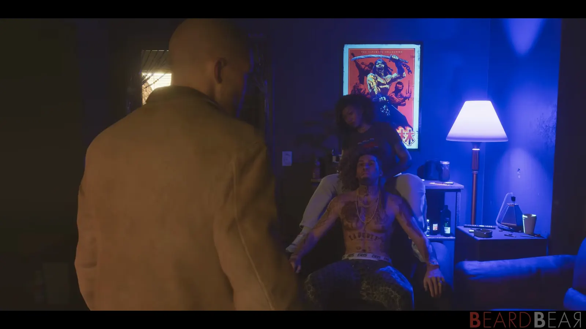
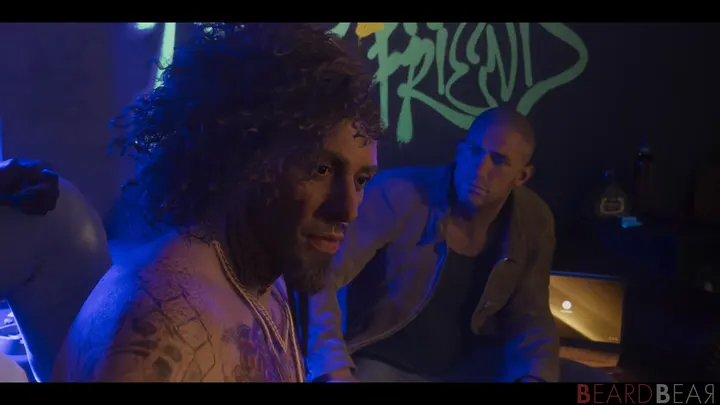
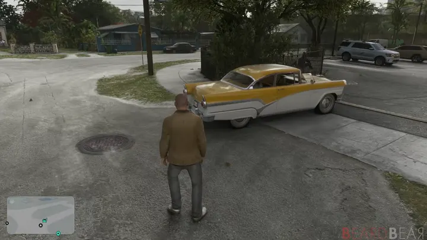
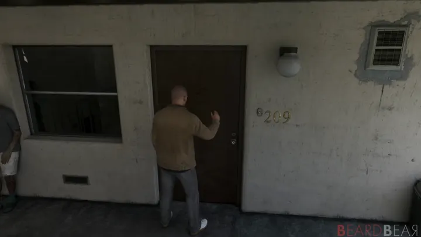
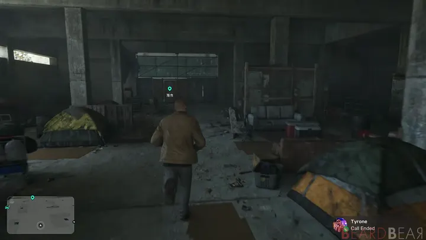
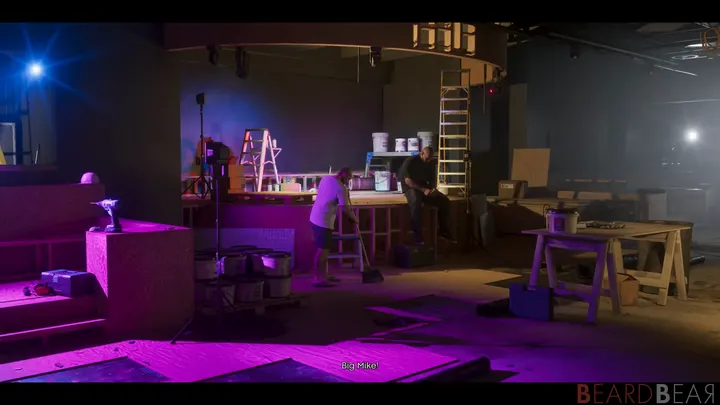

Here, Kitty Kitty: прохождение миссии GTA 6
Опубликовано:

Коротко
- Тайрон хочет знать, кто стоит за Kitty Litter — новым синтетическим наркотиком, который захлёстывает Вайс-Сити. След ведёт к Чарльзу: из квартиры в Рокридже в лагерь бездомных в La Perle, а заканчивается погоней по этажам.
- Глава 3, миссия 8 из 26. Играем за: Джейсон.
- Награда: Тайрон становится скупщиком товаров.
Миссия коротко
| Глава | 3. Tits Ass Drug Money |
| Номер в сюжете | 8 |
| Играем за | Джейсон |
| Кто даёт | Тайрон |
| Где начинается | Вайс-Сити, La Perle — жилой комплекс |
| Условие | после первой части Dubious Provenance |
| Награда | Тайрон становится скупщиком товаров |
| Переиграть | нельзя — сохраняйтесь вручную |

Где начинается
Прохождение по шагам
- Поговорите с Тайроном у его жилого комплекса в La Perle — после первой части Dubious Provenance (метка Speak with Tyrone).
- Поезжайте к квартире Чарльза в Рокридже.
- Узнайте, где он: дайте соседу у двери $20 или вскройте пустую квартиру и найдите в спальне чек из комиссионки с адресом.
- Езжайте в лагерь бездомных на северо-западном краю La Perle и выбейте дверь на первом этаже.
- Догоните Чарльза — он убегает вверх по лестнице через парковку и по крышам.
- Подойдите к Чарльзу и обыщите тело — там пакет Kitty Litter. Миссия закончится звонком Тайрону.










Советы
- Нижнюю дверь лагеря можно выбить — так быстрее.
- Бездомных по пути достаточно оглушить, стрелять не нужно.
- Наверху Чарльз остановится у стены — лезьте за ним, а потом спуститесь по лестнице к телу.
Подробности и секреты
- Награда — Тайрон становится скупщиком: ему можно сбывать краденые товары (MetaForge, leonidaplayers, gta6box).
- По данным gtaviceguides, квартира Чарльза — 209 в Warren Thacker Manor, а чек — из Aline’s Thrift Store.
- До неё — Dealer’s Choice, где Тайрон впервые появляется.
Что можно пропустить
Пропустить нечего.
Частые вопросы
Что открывает Here, Kitty Kitty?
Тайрон становится скупщиком: ему можно сдавать краденые товары.
Как узнать адрес Чарльза?
Заплатите швейцару $20 или найдите чек в спальне пустой квартиры.
Где Чарльз в Here, Kitty Kitty?
В лагере бездомных на северо-западном краю La Perle. Адрес можно узнать у соседа за $20 или по чеку в его квартире.
Что даёт Here, Kitty Kitty?
Тайрон становится скупщиком краденых товаров.
Источники: PowerPyx, «GTA 6 Here, Kitty Kitty (Speak with Tyrone) Walkthrough», 18–19.11.2026; VGC, Sportskeeda, gta6hintbook, games.gg, MetaForge, leonidaplayers, gta6-life, gta6box, gtaviceguides, gtamaps — Here, Kitty Kitty, 18–28.11.2026. Кнопки указаны для PS5, в скобках — Xbox. Названия миссий — как в английской версии игры.